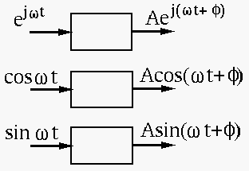

RC circuit:
When the input to the system represented by the term on the right-hand
side of the DE is non-zero, the DE can be solved to find its particular
or steady state solution. We first a constant input:
We assume is a constant, and the DE becomes , i.e.,
the solution is trivially
.
We then consider an complex exponential input:
We assume
and substitute them back into the DE to get
i.e.
and the solution is:
If the input is sinusoidal
,
then the solution of the DE can be found by taking the real part
of the solution above, due to the linearity of the system
(superposition):
Alternatively, this RC circuit can also be solved more conveniently by
the phasor method, if only the steady state solution (the particular
solution) is of interest. The phasor of the input voltage
is simply 1, and the phasor of the voltage across
 can be found by voltage divider:
can be found by voltage divider:
where
 . Converting this into time domain
we get
. Converting this into time domain
we get
RL circuit:
Given an RL circuit consisted of a resistor and an inductor in
series connected to an AC voltage source
, we
want to find the current  . The governing DE describing the
circuit can be obtained based on KVL:
. The governing DE describing the
circuit can be obtained based on KVL:
We first consider an complex exponential input:
We assume
and substitute them back into the DE to get
i.e.
and the solution is:
The solution for the DE with input
is
Alternatively, this RL circuit can also be resolved by the phasor
method. Now the current can be much more easily found by
generalized Ohm's law. The phasor representation of the input voltage
is simply 1, and the overall complex impedance
of the two elements in series is:
where
. By generalized Ohm's law,
the phasor representation of the current can be found as
and the real current is
Note that in general, the frequency response function (FRF) of
the system is defined as the ratio of the output to the input of the
system, both represented as complex exponentials. In this specific case,
we have
with
Therefore the steady state output can be found to be:
The second method, much easier than the first one, is actually a short
cut representation of the first DE method. This is the justification of
the complex variable or phasor method for analyzing AC circuits. However,
note that the phasor method can only find the steady state solution. The
homogeneous differential equation will have to be solved to obtain the
transient solution.
